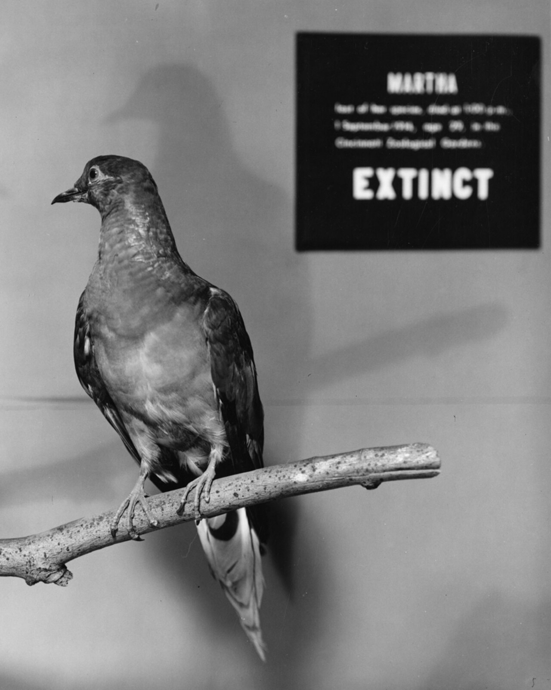
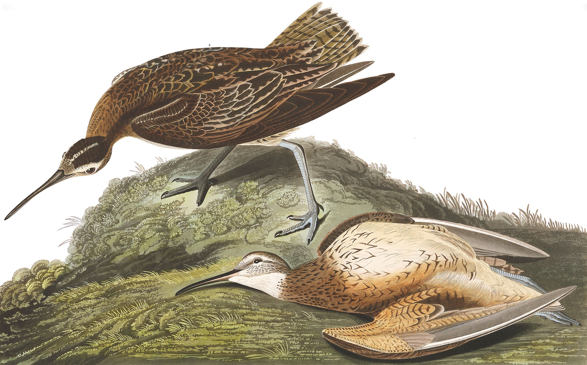
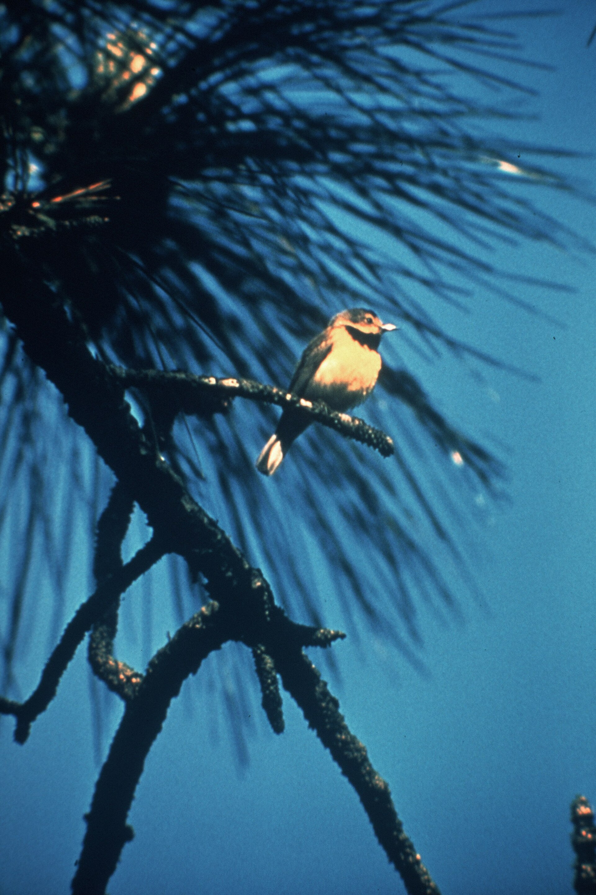
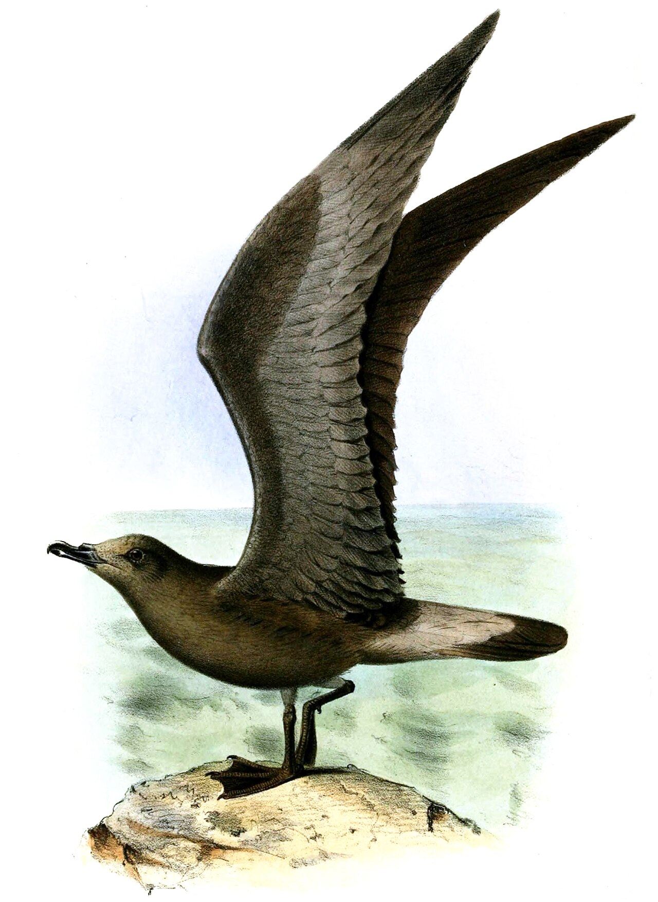
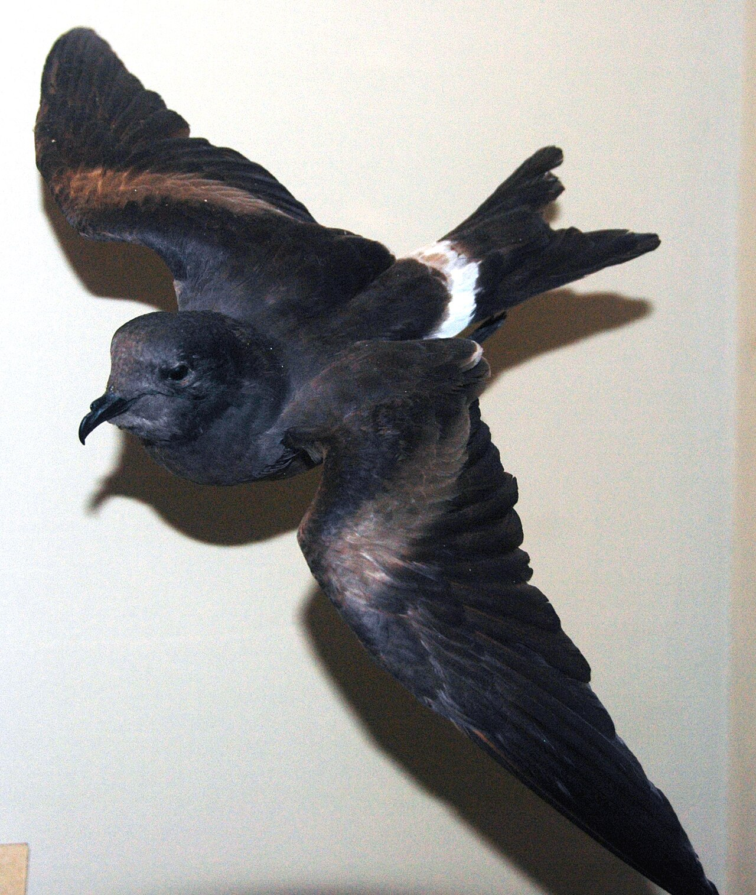

An environmental investigation mapping the anatomy of loss, drawn from the latest data from BirdLife International.
On 2 February 1995, Chris Gomersall photographed a Slender-billed Curlew (Numenius tenuirostris) at Merja Zerga, Morocco — the last photo of the species. No one knew then that history would record that sighting as the last confirmed appearance on Earth of the bird.
Today, with the release of BirdLife’s State of the World’s Birds report, doubt has hardened into a bleak certainty: its extinction has been formally declared, topping a black list of seven migratory bird species whose journeys were cut off for good over the past 150 years.
The report shows that a migration route is not an imaginary line on a map but a “tightly linked chain”: break one link — whether a breeding bog in Siberia or a feeding bay in the Mediterranean — and the whole life cycle of the species collapses.
Case files: seven species humans pushed out of existence
A review of the organisation’s historical records shows that six of these birds were lost in the Americas, while the latest and most shocking loss fell on the Eurasian–African mainland:
1. Slender-billed Curlew — the latest casualty
Date of fall: Formally declared extinct in the organisation’s latest assessments (after decades of absence since 1995).
Extinction scenario: Its extinction is the first of its kind for a bird on the Eurasian–African mainland in modern history. The puzzle of its disappearance exposes weak protection of long-haul flyways; despite exhaustive tracking attempts, its flocks faded as peatlands and wetlands in its likely breeding grounds were drained, tidal flats it used to rest on around the Mediterranean were destroyed, and indiscriminate hunting pressed along its migration line.
2. Passenger Pigeon — from billions to zero

Date of fall: September 1914 (with the death of the female “Martha” in her cage at Cincinnati Zoo).
Extinction scenario: The twentieth century’s most infamous environmental crime. It once filled North American skies with flocks that blocked the sun and were counted in the billions, then faced industrial commercial hunting to sell as cheap meat, alongside the felling of the deciduous forests whose mast it fed on — breaking its mass-breeding system and wiping it out in a few decades.
(Ectopistes migratorius)
3. Eskimo Curlew — sport shooting at stopovers

Date of fall: Listed as Critically Endangered and Possibly Extinct (last decisive documentation 1963).
Extinction scenario: It flew a punishing route from arctic tundra toward South America. The bird was drained during exhausted stopovers on the American Great Plains, where hunters targeted it by the millions for food markets, as prairie steppe was turned into farmland that upended its diet.
(Numenius borealis)
4. Labrador Duck — fatal dietary specialisation

Date of fall: 1878 (the first of the seven to vanish in this era).
Extinction scenario: A unique sea duck with a lined bill built for picking small molluscs and crustaceans on North American coasts. The feather and egg trade, pollution of river mouths, and the decline of molluscs under settler activity finished off numbers that were already fragile.
(Camptorhynchus labradorius)
5. Bachman’s Warbler — axe victims in winter and summer

Date of fall: Late 1980s (last documented sighting 1988).
Extinction scenario: A small songbird migrating between southern U.S. swamps and Cuban forests. It faced a death sentence from both ends: drainage of swamp forests in its northern home, and conversion of Cuban winter woods into sugarcane estates, leaving it nowhere to shelter on either half of its journey.
(Vermivora bachmanii)
6. Jamaican Petrel — traps of invasive animals

Date of fall: 1879 (listed Critically Endangered and strongly Possibly Extinct).
Extinction scenario: A seabird that nested in ground burrows in Jamaica’s highlands. The disaster was not at sea but on its return to land: colonists introduced mongoose and rats to control rodents, and they preyed on this bird’s eggs and helpless chicks in their earth nests.
(Pterodroma caribbaea)
7. Guadalupe Storm-petrel — islands turned into graves

Date of fall: Around 1912.
Extinction scenario: It inhabited Guadalupe Island off Mexico. Goats brought by people destroyed the thin plant cover that sheltered its nesting burrows, while feral cats left on the island finished off adults and chicks until total extinction.
(Hydrobates macrodactylus)